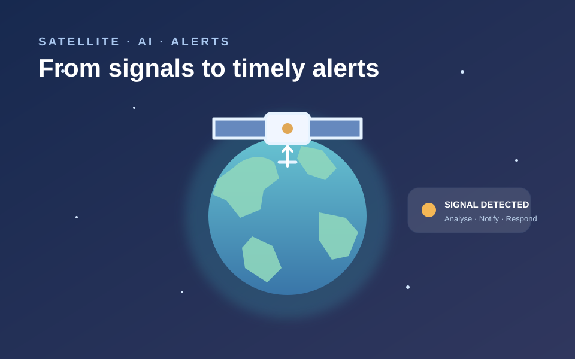

SAFE-NET Satellite Instant Alert
A working prototype that uses NASA FIRMS active-fire satellite data to show map detections, risk levels, browser notifications, and alert history. Includes demo mode when no FIRMS key is configured.
PythonSatellite dataAlerts